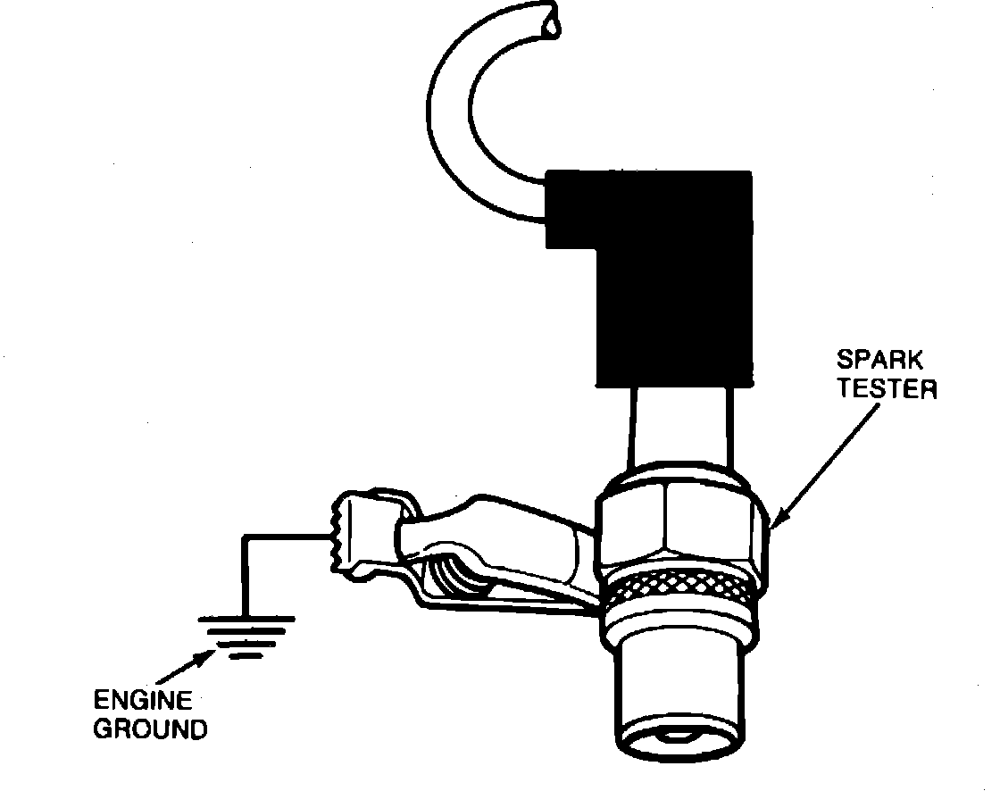

Spark Test
Spark Testing:

1. Shut off engine.
2. Disconnect #1 ignition wire at the spark plug.
3. Install a spark tester into the end of the spark plug boot.
4. Have an assistant crank the engine over and check for spark at the tester.
5. Repeat this process at each spark plug.
- If any faults are found, see Diagnosis by Symptom article.
6. If no faults are found in the above tests, proceed to computerized engine controls for further diagnosis.